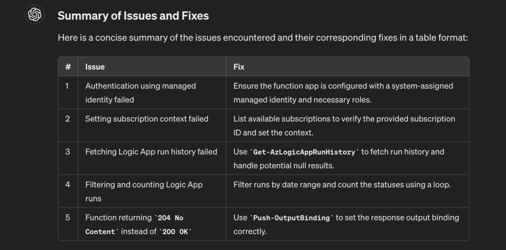
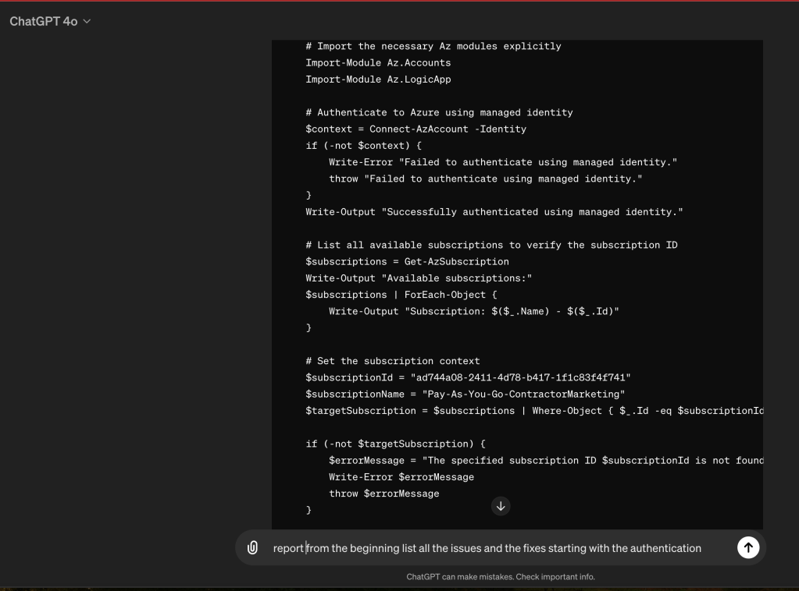
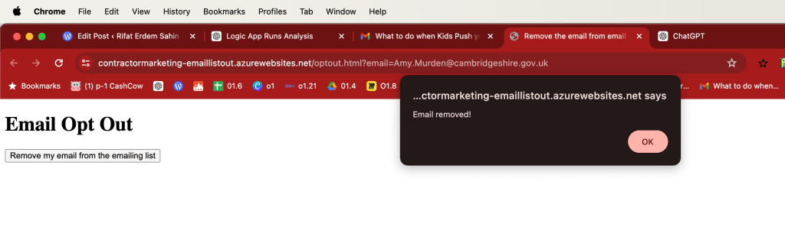

List all the work that is done in a report
End result with 5 semblance points

gpt40 > https://chatgpt.com/c/cd172b24-c518-4472-91ed-85fab0cd8ce9

Summary of Issues and Fixes
Here’s a detailed report on the issues encountered and the corresponding fixes implemented, starting from authentication.
1. Authentication Using Managed Identity
Issue:
-
The function initially faced an issue with authenticating using managed identity.
-
Error messages such as "ManagedIdentityCredential authentication unavailable" indicated multiple attempts to obtain a token from the managed identity endpoint.
Fix:
-
Ensure the function app is configured with a system-assigned managed identity.
-
Assign the managed identity the necessary roles (e.g., Owner) in both the subscription and resource group.
Implementation:
$context = Connect-AzAccount -Identity
if (-not $context) {
throw "Failed to authenticate using managed identity."
}
2. Setting the Subscription Context
Issue:
- The function encountered an issue with setting the subscription context, indicated by errors such as "The specified subscription ID is not found."
Fix:
- Ensure the subscription ID is correct and list available subscriptions to verify the provided subscription ID.
Implementation:
$subscriptions = Get-AzSubscription
Write-Output "Available subscriptions:"
$subscriptions | ForEach-Object {
Write-Output "Subscription: $($.Name) - $($.Id)"
}
$subscriptionId = "ad744a08-2411-4d78-b417-1f1c83f4f741"
$subscriptionName = "Pay-As-You-Go-ContractorMarketing"
$targetSubscription = $subscriptions | Where-Object { $_.Id -eq $subscriptionId }
if (-not $targetSubscription) {
$errorMessage = "The specified subscription ID $subscriptionId is not found. Available subscriptions are: $($subscriptions | Format-Table -Property Name, Id -AutoSize | Out-String)"
throw $errorMessage
}
Set-AzContext -SubscriptionId $subscriptionId
3. Fetching Logic App Run History
Issue:
- Errors occurred when attempting to fetch Logic App run history, indicated by messages such as "Failed to retrieve Logic App run history."
Fix:
- Use
Get-AzLogicAppRunHistoryto fetch the run history and handle any potential null results.
Implementation:
$resourceGroupName = "ContractorMarketing"
$logicAppName = "contractormarketing-replygmail-realtime"
$allRuns = Get-AzLogicAppRunHistory -ResourceGroupName $resourceGroupName -Name $logicAppName
if (-not $allRuns) {
throw "Failed to retrieve Logic App run history."
}
4. Filtering and Counting Logic App Runs
Issue:
- The function needed to filter runs based on a date range and count the statuses (Succeeded, Failed, Skipped).
Fix:
- Filter runs using PowerShell’s
Where-Objectand count the statuses using a loop.
Implementation:
$startDate = (Get-Date).Date
$endDate = $startDate.AddDays(1)
$filteredRuns = $allRuns | Where-Object { $.StartTime -ge $startDate -and $.StartTime -lt $endDate }
$successCount = 0
$failureCount = 0
$skippedCount = 0
foreach ($run in $filteredRuns) {
switch ($run.Status) {
"Succeeded" { $successCount++ }
"Failed" { $failureCount++ }
"Skipped" { $skippedCount++ }
}
}
5. Handling HTTP Responses
Issue:
- The function was returning
204 No Contentinstead of200 OKwith the expected JSON response.
Fix:
-
Use
HttpResponseMessageto construct and return the correct HTTP response with the JSON body. -
Later, adjusted to use
Push-OutputBindingfor setting the response output binding correctly.
Implementation:
$response = @{
Date = (Get-Date -Format 'yyyy-MM-dd')
SucceededRuns = $successCount
FailedRuns = $failureCount
SkippedRuns = $skippedCount
}
$responseBody = $response | ConvertTo-Json
Write-Output "Response Body: $responseBody"
Push-OutputBinding -Name Response -Value ([HttpResponseContext]@{
StatusCode = [System.Net.HttpStatusCode]::OK
Body = $responseBody
Final Function Code
Combining all the fixes and implementations, the final function code is as follows:
using namespace System.Net
using namespace System.Net.Http
using namespace System.Text
Input bindings are passed in via param block.
param($Request, $TriggerMetadata)
try {
# Clear any previously loaded modules if needed
Remove-Module Az -ErrorAction SilentlyContinue
Remove-Module Az.Accounts -ErrorAction SilentlyContinue
Remove-Module Az.LogicApp -ErrorAction SilentlyContinue
# Import the necessary Az modules explicitly
Import-Module Az.Accounts
Import-Module Az.LogicApp
# Authenticate to Azure using managed identity
$context = Connect-AzAccount -Identity
if (-not $context) {
Write-Error "Failed to authenticate using managed identity."
throw "Failed to authenticate using managed identity."
}
Write-Output "Successfully authenticated using managed identity."
# List all available subscriptions to verify the subscription ID
$subscriptions = Get-AzSubscription
Write-Output "Available subscriptions:"
$subscriptions | ForEach-Object {
Write-Output "Subscription: $($_.Name) - $($_.Id)"
}
# Set the subscription context
$subscriptionId = "ad744a08-2411-4d78-b417-1f1c83f4f741"
$subscriptionName = "Pay-As-You-Go-ContractorMarketing"
$targetSubscription = $subscriptions | Where-Object { $_.Id -eq $subscriptionId }
if (-not $targetSubscription) {
$errorMessage = "The specified subscription ID $subscriptionId is not found. Available subscriptions are: $($subscriptions | Format-Table -Property Name, Id -AutoSize | Out-String)"
Write-Error $errorMessage
throw $errorMessage
}
Set-AzContext -SubscriptionId $subscriptionId
# Verify the context
$currentContext = Get-AzContext
Write-Output "Current context: SubscriptionName=$($currentContext.Subscription.Name), SubscriptionId=$($currentContext.Subscription.Id)"
if ($currentContext.Subscription.Id -ne $subscriptionId -or $currentContext.Subscription.Name -ne $subscriptionName) {
Write-Error "Failed to set the subscription context to the correct subscription."
throw "Failed to set the subscription context to the correct subscription."
}
# Define variables
$resourceGroupName = "ContractorMarketing"
$logicAppName = "contractormarketing-replygmail-realtime"
# Fetch the runs for the Logic App in the specified resource group
$allRuns = Get-AzLogicAppRunHistory -ResourceGroupName $resourceGroupName -Name $logicAppName
# Ensure that the $allRuns variable is not null
if (-not $allRuns) {
Write-Error "Failed to retrieve Logic App run history."
throw "Failed to retrieve Logic App run history."
}
# Define the date range
$startDate = (Get-Date).Date
$endDate = $startDate.AddDays(1)
$filteredRuns = $allRuns | Where-Object { $_.StartTime -ge $startDate -and $_.StartTime -lt $endDate }
# Initialize counters
$successCount = 0
$failureCount = 0
$skippedCount = 0
# Loop through the filtered runs and count the statuses
foreach ($run in $filteredRuns) {
switch ($run.Status) {
"Succeeded" { $successCount++ }
"Failed" { $failureCount++ }
"Skipped" { $skippedCount++ }
}
}
# Prepare the response
$response = @{
Date = (Get-Date -Format 'yyyy-MM-dd')
SucceededRuns = $successCount
FailedRuns = $failureCount
SkippedRuns = $skippedCount
}
# Output the results
$responseBody = $response | ConvertTo-Json
Write-Output "Response Body: $responseBody"
Push-OutputBinding -Name Response -Value ([HttpResponseContext]@{
StatusCode = [System.Net.HttpStatusCode]::OK
Body = $responseBody
} catch {
Write-Error "An error occurred: $"
Push-OutputBinding -Name Response -Value ([HttpResponseContext]@{
StatusCode = [System.Net.HttpStatusCode]::InternalServerError
Body = "An error occurred: $"
}
Deploy and Test:
-
Deploy: Deploy the final function code to your Azure Function App.
-
Test: Trigger the function to ensure it returns the correct
200 OKstatus with the JSON content. Monitor the logs to verify that all steps are executed successfully.
system started working now i see the emails but we need dedicated operators for this

Imported from rifaterdemsahin.com · 2024